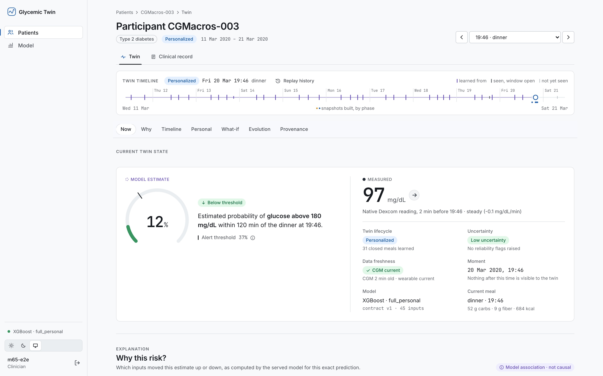
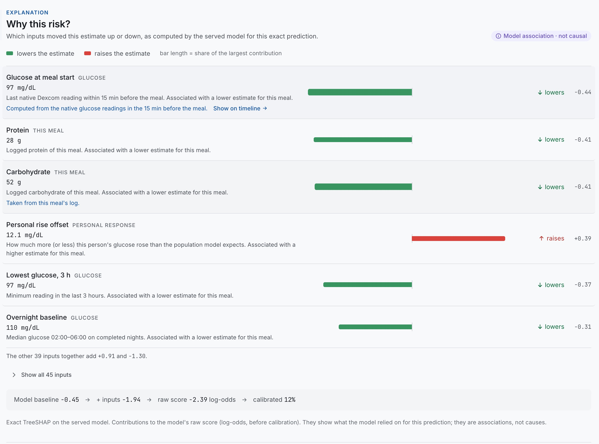
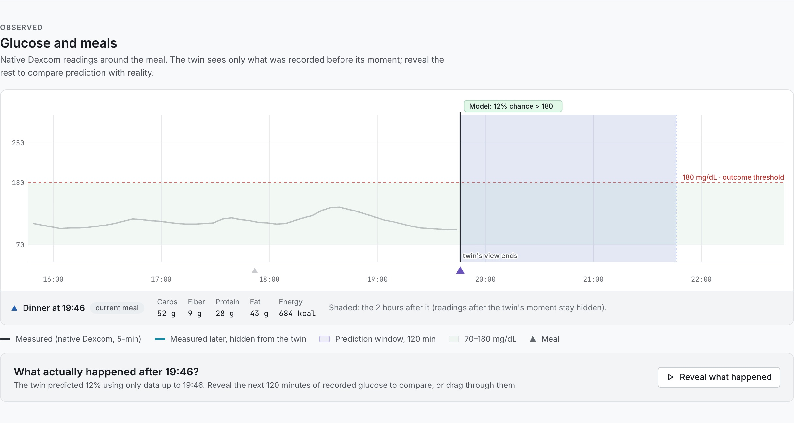
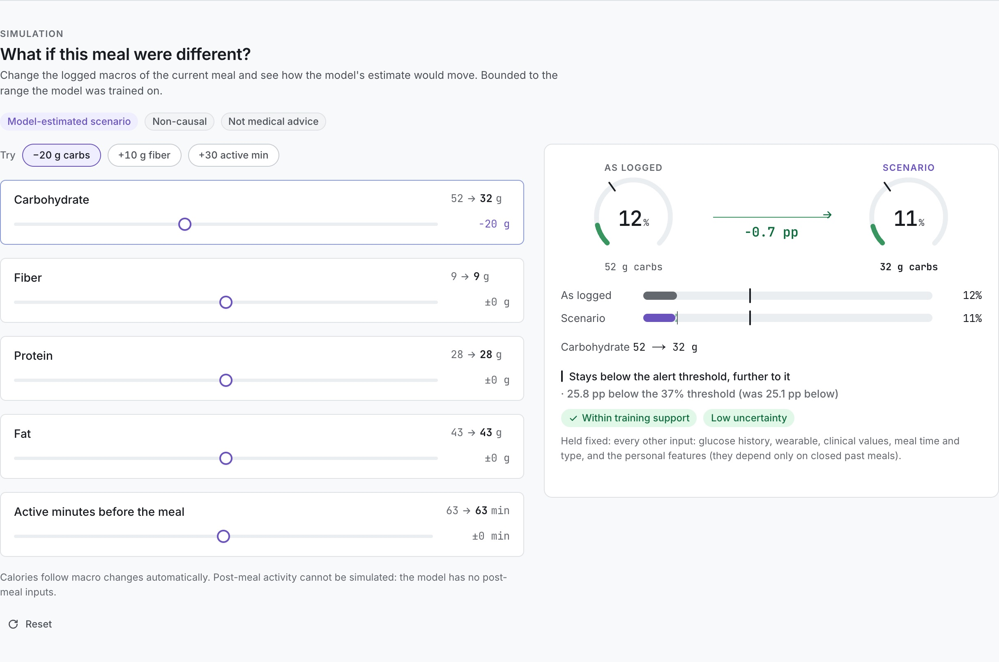
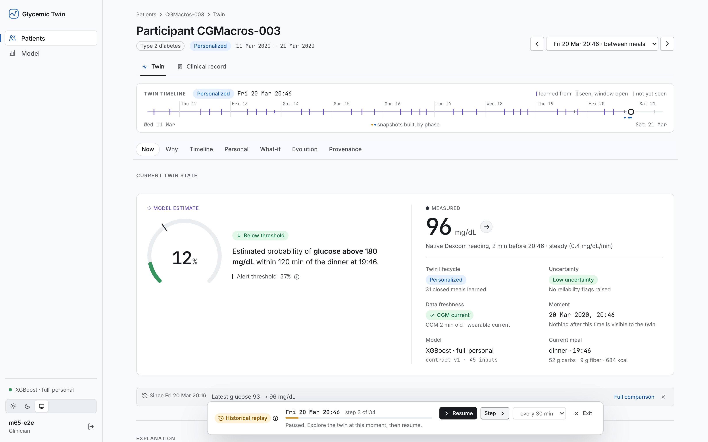

Data audit → leakage-controlled feature engineering → evaluated ML models → a deterministic Digital Twin engine → a secure FastAPI + PostgreSQL backend → an interaction-first Next.js clinician interface → Docker, Caddy and CI. All on real, open data.
“Given everything known about this person up to now, how likely is this meal to take them above 180 within two hours, why, and how would a different meal look to the model?”
Clinicians: diabetes educators, endocrinologists and primary care, reviewing CGM, meal and wearable data before or during follow-up.
People with prediabetes or type 2 diabetes (groups derived from baseline HbA1c). Healthy participants are evaluated separately.
Per-meal risk with uncertainty, its drivers, the person's learned response, prediction vs. reality, bounded what-if, and replay of how the Twin evolved.
No medication, insulin, diagnosis or treatment functionality. No automated actions. Not a medical device, not clinically validated, and not live monitoring.
| Approach | What it does | What is missing |
|---|---|---|
| CGM report | Shows curves and time in range afterwards | No estimate before the outcome, no reasons, no scenarios |
| Population rules | “Fewer carbs”, fixed carb limits | Ignores how this person responds |
| A single ML score | One number per meal | No history, personalization, uncertainty or traceability; often evaluated with leakage |
| Glycemic Twin | A per-person state at any moment, which predicts and explains | Personal, time-honest, explainable, traceable, queryable with bounded what-if |
Built only from what was observable up to as_of. Nothing later is visible, and a meal's outcome counts only once its 2-hour window has closed.
clinical baseline, recent glucose and heart rate, meals, personal response
rebuilt at any moment; evidence accumulates as time moves forward
calibrated risk, drivers, uncertainty, full provenance
bounded what-if; diff_states explains change
Gutierrez-Osuna, R., Kerr, D., Mortazavi, B., & Das, A. (2025). CGMacros: a scientific dataset for personalized nutrition and diet monitoring (v1.0.0). PhysioNet. doi:10.13026/3z8q-x658
License: CC BY-NC-SA 4.0. Not owned, redistributed or re-licensed by us. Raw data is not in our repository.
checksummed, pinned manifest; never modified
cleaning rules v1; native CGM detected (minute values are interpolated)
> 180 mg/dL within 120 min of meal start; ≥ 80% coverage, no overlapping meal
45-input contract, all known at meal start
nested participant CV, calibration, SHAP, checksummed bundles
923 meals · 481 positive (52.1%) · 30 participants, 29 with ≥ 1 positive
785 meals · 377 positive (48.0%). Excluded: already above 180 before the meal, no pre-meal native reading, unusable macros.
| Group | # | Inputs (all known at meal start) |
|---|---|---|
| Pre-meal glucose | 11 | last native reading, slopes, variability, 3-h mean/min/max, time in range, overnight baseline |
| Meal | 11 | carbs, protein, fat, fiber, calories, meal type, time of day |
| Context | 3 | recent carbs, minutes since the last meal |
| Wearable | 8 | heart rate vs resting, METs, active minutes |
| Clinical | 9 | HbA1c, fasting glucose and insulin, HOMA-IR, BMI, lipids |
| Personal | 3 | shrinkage estimates from the person's earlier closed meals |
0 meals read data after their start time.
Features rebuilt from history cut at meal start are identical.
No participant appears in both training and test.
No meal inside another usable meal's 2-hour window.
No single feature is suspiciously predictive.
Fitted per fold, on training participants only.
“Amount Consumed” is logged after the meal, so it is never a feature. Labels and features are kept on separate bases (ADR-013). In the Twin, tests append different future data and check that the state hash does not change.
+0.107 PR-AUC [0.059, 0.158] · +0.064 AUROC (paired bootstrap)
+0.001 [−0.034, 0.038]: no meaningful difference. Not claimed superior.
Multimodal vs glucose-only +0.048 [0.010, 0.091]. Personal prior +0.013 [−0.017, 0.041]: not proven.
and close only meal windows that finished before it
prior and calibrator come from the model bundle; contract and config hashes checked (no train/serve skew)
model bundle SHA-256 verified on load
lifecycle, drivers, personal response, freshness, provenance (input hashes, configs, model identity)
bounded, non-causal what-if on the current meal
what changed between two moments, and why
same data + same moment → same state and hash. A test rebuilds all 45 inputs through the Twin and matches the training data exactly.





Argon2id passwords, lockout after 5 failures, no user enumeration. Google sign-in only for accounts an admin provisioned.
Server-side, hashed 256-bit tokens; HttpOnly, SameSite, Secure cookies; CSRF token on every change.
Clinician / admin; sign-ins, denials, model activation and user creation are audited, never with secrets.
Refuses to start without secure cookies and trusted hosts; documentation endpoints off; generic errors.
JSON with request IDs and secret redaction; no bodies, cookies or query strings.
De-identified research data only. No raw data, patient-level tables, model bundles or secrets in git.
| Layer | Technology |
|---|---|
| Data and ML | Python 3.11, pandas, PyArrow, scikit-learn, XGBoost, SHAP; uv lock file |
| Twin core | twin_core: pure Python, no web or database code |
| Backend | FastAPI, Pydantic v2, SQLAlchemy 2, Alembic, PostgreSQL 16 |
| Frontend | Next.js 15, React 19, TypeScript, TanStack Query, custom SVG charts |
| Delivery | Docker (non-root), Compose, Caddy (HTTPS, one origin), GitHub Actions |
370 backend tests (incl. PostgreSQL migrations) · 105 frontend unit tests · 51 Playwright E2E with axe accessibility, reduced motion and mobile
lint, types, tests (fails if any test is skipped), production images built for linux/amd64
No chatbot and no external AI APIs.
About 30 target-group participants over ~10 days: wide confidence intervals.
New participants only; temporal validation is future work.
What-if and SHAP show what the model relies on, not what would happen to a person.
Labels use the frozen 1-minute series; the effect of interpolation is unmeasured (SA-1).
Current-meal macros and pre-meal activity only; no post-meal activity, medication or insulin.
Not a medical device, not clinically validated, not deployed publicly, not live monitoring.
later days of the same people; other CGM datasets
native-only labels vs frozen labels
does the Twin help review, and is it understood?
the Compose + Caddy stack is ready; governance first
carefully scoped, post-hackathon